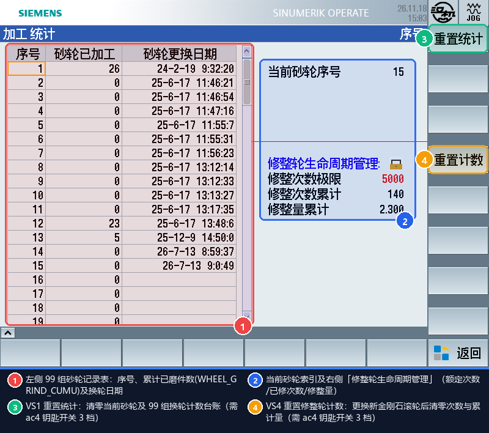
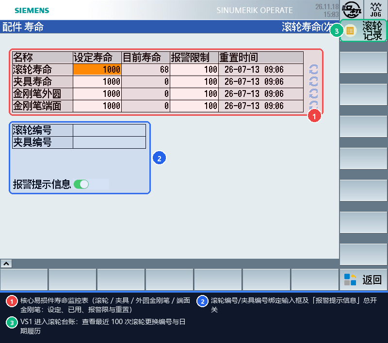
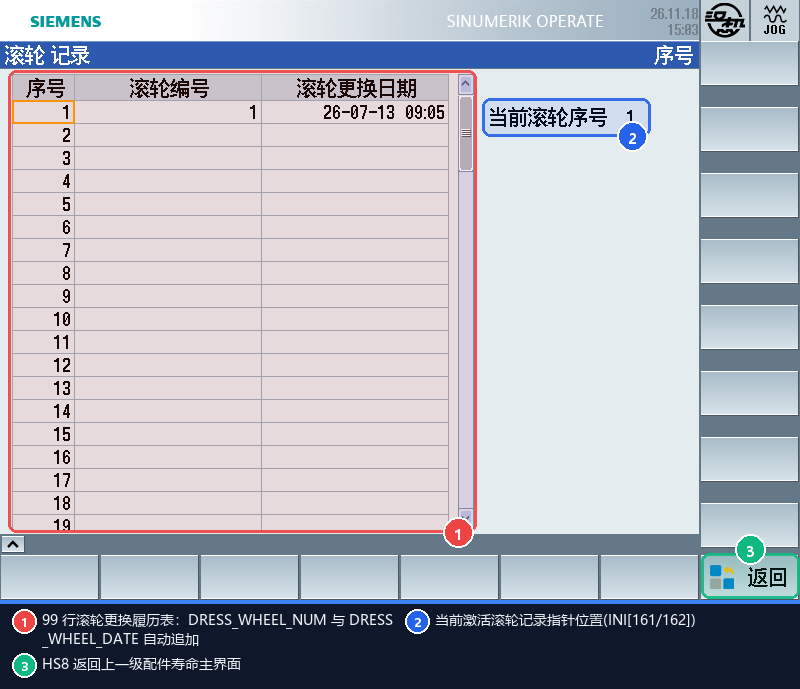

5.3 加工统计、砂轮记录与配件寿命管理
在 CUSTOM 主页 上，VS5 加工统计（需 ac4 钥匙开关 3 档 及 TECHNOLOGY[57] = 1 开启，进入 a_stats.com Mask1）与 VS3 配件寿命（ac7 钥匙开关 0 档 即可进入，需 TECHNOLOGY[368] = 1 开启，进入 a_stats.com Mask3）为两个独立的垂直软键入口，共同隶属于 a_stats.com 模块，将“工艺质量追溯”与“耗材预警防错”集中管理。
1. 加工统计主视图与修整轮生命周期（Mask1）

1.1 左侧：99 组换砂轮历史加工台账
每次在磨削/修整流程（如 B_DRESS.SPF 中 DRESSER[5] == 0 切换新砂轮，或初次运行）启用新砂轮时，系统会自动将 当前砂轮序号（CUR_WHEEL）加 1（范围 1～99 循环覆盖），并在 该编号记录表 中写下两条实时数据：
WHEEL_CHANGED_DATA[CUR_WHEEL]：本次更换启用新砂轮时的控制器年月日与时分秒时间戳；WHEEL_GRIND_CUMU[CUR_WHEEL]：该片砂轮服役期间已累计完成的合格工件加工数量。
管理作用：工艺主管可直观调阅最近 99 次更换砂轮的时间跨度与单轮产出效率（件/片），识别砂轮批次质量波动或修整过度问题。
1.2 右侧：修整轮生命周期统计（当 TECHNOLOGY[134] = 1 显示）
修整轮生命周期次数设置（TECHNOLOGY[135]）：设定单只金刚石滚轮/修整轮的额定修整次数上限；修整轮修整次数累计（TECHNOLOGY[136]） 与修整轮修整量累计（TECHNOLOGY[137]）：随修整循环自动递增；VS4 重置修整轮计数（需ac4钥匙开关 3 档 权限，且仅在TECHNOLOGY[134] = 1时显示）：更换新修整轮时按下后通过Mask2二次确认清零统计；VS1 重置统计（同样需ac4钥匙开关 3 档 权限）：清空历史砂轮加工台账表格。
2. 配件寿命管理表（Mask3 & B_SET_SERVICE_LIFE.SPF）
当开启 配件寿命界面显示（NC：TECHNOLOGY[368] = 1 / HMI：TECHNOLOGY[369]）时，统计模块集成 配件寿命管理 子画面 Mask3，对现场 4 种核心易损件实施寿命预警与强制停机互锁：

| 序号 | 监控配件项目 | 设定寿命（NC 变量） | 当前已用计数 | 报警阈值 | 重置时间记录 | 适用机型 |
|---|---|---|---|---|---|---|
| 1 | 滚轮 | SERVICE_LIFE[0] |
SERVICE_LIFE[10] |
SERVICE_LIFE[5] |
SERVICE_LIFE_TXT[0] |
全机型 |
| 2 | 夹具 | SERVICE_LIFE[1] |
SERVICE_LIFE[11] |
SERVICE_LIFE[6] |
SERVICE_LIFE_TXT[1] |
全机型 |
| 3 | 金刚笔一（外圆） | SERVICE_LIFE[2] |
SERVICE_LIFE[12] |
SERVICE_LIFE[7] |
SERVICE_LIFE_TXT[2] |
仅磨削中心（;ifIsCenter） |
| 4 | 金刚笔二（端面） | SERVICE_LIFE[3] |
SERVICE_LIFE[13] |
SERVICE_LIFE[8] |
SERVICE_LIFE_TXT[3] |
仅磨削中心（;ifIsCenter） |
机型差异说明：对于普通外/内螺纹机型（
;ifIsNotCenter），Mask3表格仅显示前 2 行（滚轮与夹具），且底层B_SET_SERVICE_LIFE.SPF会自动裁剪跳过金刚笔一/二的寿命初始化、计数与报警检查。配件编码登记与单行重置：
Mask3表格下方提供滚轮编号（NC：SERVICE_LIFE_TXT[5]/ HMI：SERVICE_LIFE_TXT[6]）与夹具编号（NC：SERVICE_LIFE_TXT[6]/ HMI：SERVICE_LIFE_TXT[7]）登记框，并设有报警提示信息（SERVICE_LIFE[19]=1开启）开关；更换任一耗材后勾选该行右侧重置按钮，系统会立即将对应目前寿命清零并刷新重置时间（SERVICE_LIFE_TXT[0..3]）。
自动累加与超限停机保护逻辑（B_SET_SERVICE_LIFE.SPF）
- 每次执行对应修整或加工循环时，子程序调用
B_SET_SERVICE_LIFE(2, NUM)为对应配件计数+1； - 每次主程序
A_GRINDING.SPF/A_GRIND_CENTER.SPF启动瞬间，立即调用B_SET_SERVICE_LIFE(1, 0)：- 自动补齐尚未初始化的
SERVICE_LIFE_TXT[0..3]起始启用时间戳； - 若
是否需要报警（SERVICE_LIFE[19]=1） 且 当前计数 > 报警限制（如SERVICE_LIFE[10] > SERVICE_LIFE[5]），系统立即弹出中文报警提示 “滚轮/夹具/金刚笔一/金刚笔二寿命不足，请更换!”，并执行M0+ 长延时 锁死程序，迫使操作员确认更换配件并在此界面点击对应行右侧勾选/重置按钮清零后才能恢复生产！
- 自动补齐尚未初始化的
3. 滚轮编号历史台账（Mask4 / VS1）
在 Mask3 按下 VS1 软键可进入 滚轮编号管理列表 Mask4。系统支持记录并管理多达 100 个滚轮编号（DRESS_WHEEL_NUM[0..99]） 及其对应装机时间（DRESS_WHEEL_DATE[0..99]）。通过上方 当前滚轮序号（NC：INI[161] / HMI：INI[162]）绑定当前机台正在使用的滚轮档案，实现单只滚轮从上线到报废的全程可追溯管理。
